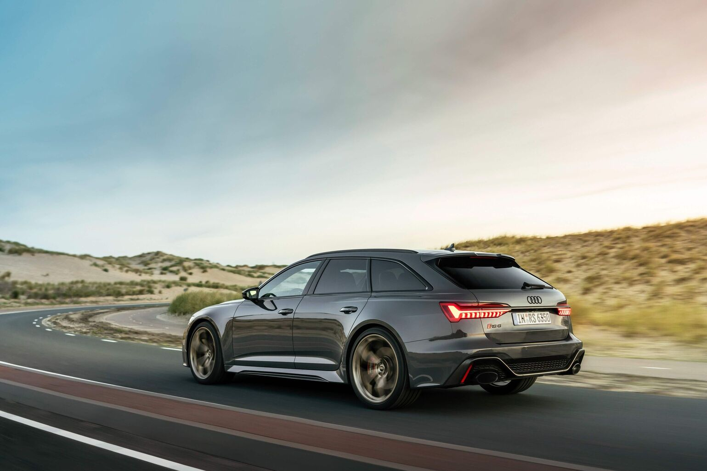
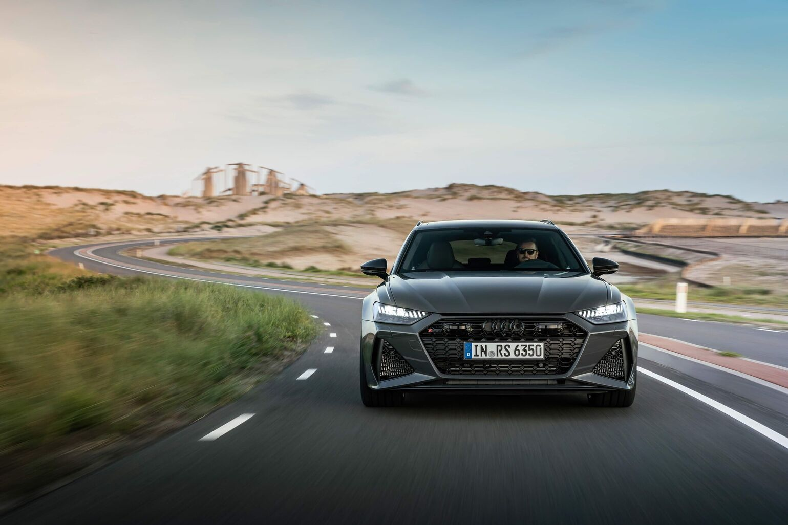

Audi RS 6 Avant performance and RS 7 Sportback performance
- Power increase by 30 hp. and 50 Nm for faster acceleration from 0 to 100 km/h in 3.4 seconds
- More precise handling thanks to an optimized self-locking center differential, new 22-inch lightweight wheels, as well as high-performance tires
- Matt details in the exterior as well as blue accents in the interior emphasize the exclusive character of the models with the "performance" designation
Ingolstadt, November 29, 2022 - More powerful and faster than all RS 6* and RS 7* models to date: the new Audi RS 6 Avant performance* and RS 7 Sportback performance* offer a host of extras that make the design of the models -expressive, and the driving experience - more emotional. The powerful 4.0-liter V8 biturbo TFSI engine now has an output of 463 kW (630 hp) and a maximum torque of 850 Nm (combined fuel consumption in l/100 km**: - NEDC; 12.7 - 12.0 (WLTP); combined CO2 emissions in g/km: - NEDC; 289 - 273 (WLTP)). The RS 6 Avant performance* and RS 7 Sportback performance* are available from December 8, with each model priced at €135,000.
At Audi, the "performance" designation means more power. For example - the larger turbochargers and the increase in turbocharger pressure from 2.4 to 2.6 bar on the 4.0-litre V8 biturbo TFSI engine shared by the RS 6 Avant performance (combined fuel consumption in l/100 km - NEDC ; 12.7 - 12.2 (WLTP); combined CO2 emissions in g/km: - NEDC; 289 - 277 (WLTP) and RS 7 Sportback performance (combined fuel consumption in l/100 km**: - NEDC; 12.5 - 12.0 (WLTP); combined CO2 emissions in g/km: - NEDC; 284 - 273 (WLTP), enabling an increase in engine power of 30 hp and 50 Nm compared to the base versions. This means a total increase in power from 441 kW (600 hp) to 463 kW (630 hp) and maximum torque from 800 to 850 Nm. Performance models (combined fuel consumption in l/100 km**: - NEDC; 12.7 - 12.0 (WLTP); combined CO2 emissions in g/km: - NEDC; 289 - 273 (WLTP) accelerate from 0 to 100 km/h in 3.4 seconds, which is 0.2 seconds faster than the base versions of the RS 6/RS 7.
But sometimes less is more - the reduced amount of insulation between the engine compartment, interior and rear of the car ensures that the RS 6 Avant performance* and RS 7 Sportback performance* will thrill customers with a next-level immersive sound experience, while the car is already eight kilograms lighter. The RS 6 Avant performance* has a curb weight of 2090 kg, while the RS 7 Sportback performance* weighs 2065 kg.
For improved driving dynamics: new self-locking center differential
Power from the 4-liter TFSI engine is sent to quattro permanent four-wheel drive via a standard eight-speed tiptronic transmission with quicker shift times. The fully mechanical center differential distributes engine power to the rear axle in a ratio of 40:60, and in the event of slippage, more drive torque is automatically applied to the axle with better grip - up to 70 percent to the front axle and up to 85 percent to the rear axle . The self-locking center differential is lighter and more compact, which improves driving dynamics and also provides significantly more precise turning with less understeer in sporty driving. An added benefit is that the steering wheel self-rights more precisely and passengers enjoy a more nimble overall driving experience.
Exclusive and dynamic: 22-inch wheels with high-performance tires
The new RS 6 Avant performance* and RS 7 Sportback performance* come ex works with standard 21-inch "Star" forged alloy wheels with ten-spoke design and tire size 273/35. For an even sportier look, 22-inch light-alloy wheels are available alongside the standard 22-inch forged aluminum wheels in Polished Gloss Black Metallic, Matte Grey, Matte Black or Matte Neodymium Gold. Inspired by motorsports, the airy 5-spoke design with a Y-shape helps cool the brakes, and the lightweight rims are manufactured using a high-tech forging and milling process.The new lightweight wheel is around five kilograms lighter than the 22-inch alloy wheel on the current RS 6 Avant or RS 7 Sportback - this 20 kilogram reduction in unsprung mass improves throttle response.
Continental's new high-performance "Sport Contact 7" tires in size 285/30, which complement the new lightweight rim, play a key role in reducing weight. The tires provide consistently better grip on both dry and wet roads, and also reduce understeer when cornering quickly, resulting in overall more precise handling throughout the speed range. In addition, the braking distance is up to two meters shorter when braking from 100 to 0 km/h thanks to the new rims.
But the experience of driving modes in the "performance" models is much more unique. For example, the coast mode is now automatically activated only in the "efficiency" profile, which means that in speed ranges up to 160 km/h, it switches off the internal combustion engine and the car coasts - without fuel consumption or friction of engine torque. In addition, fine-tuning of the engine control unit software makes throttle response sharper in "S" mode when "dynamic" driving mode or "S" driving mode is active, which further increases the emotion. Updated software in the transmission control unit provides faster shift times and the differences between the various driving modes are far more noticeable.
RS Driving Dynamic package as standard equipment
The RS Driving Dynamic package is standard equipment on the RS performance* and RS 7 performance* models. This includes an increase in top speed to 280 km/h, dynamic all-wheel steering (the RS-specific software update assists the driver by actively adjusting the steering of the front and rear axles), as well as the quattro sports differential on the rear axle.
In addition to the RS Dynamics package, the RS Dynamics plus package is available, which increases the top speed to 305 km/h and adds the RS ceramic brake system. Customers can order brake calipers in grey, red or blue, and the discs are 440mm (front) and 370mm (rear). The RS ceramic brake system weighs a total of around 34kg less than the steel version, with the aim of reducing unsprung mass.
Fresh exterior colors and optical packages
The new RS 6 Avant performance* and RS 7 Sportback performance* are available in a total of 16 exterior colors - including for the first time metallic and matt "Ascari Blue", as well as matt "Dew Silver". Performance models stand out with standard RS exterior components in matte grey, including the exterior mirrors, front spoiler, front side bumper elements, side skirt inserts, roof rails and side window trim and rear diffuser. A matte "Carbon Black" optical package is also an option, where the roof rails and side window trims are black. The Audi rings and model name are available in chrome or black as customer's choice.
＜ Back